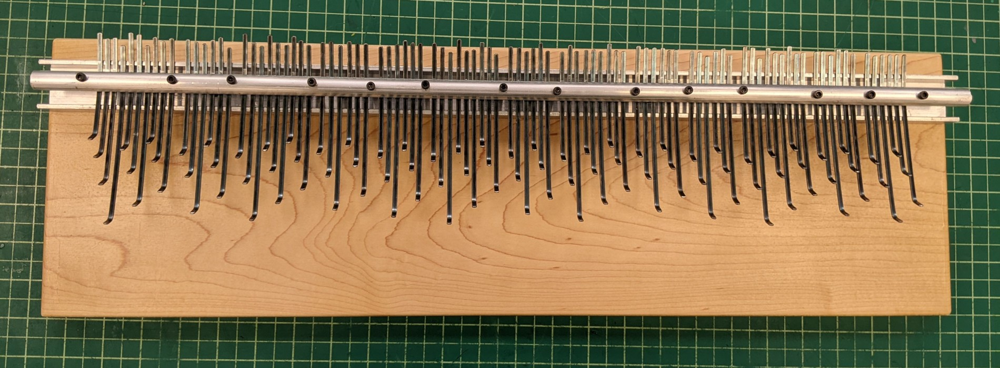
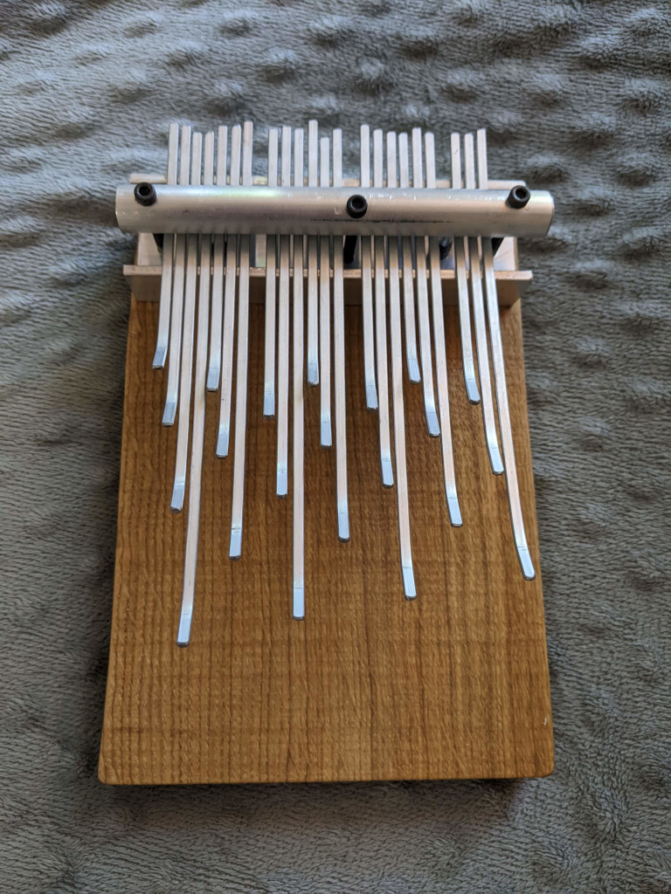
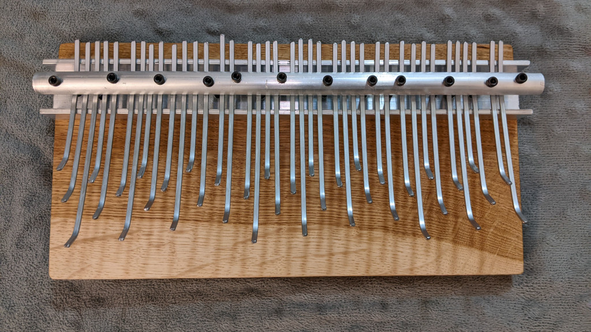
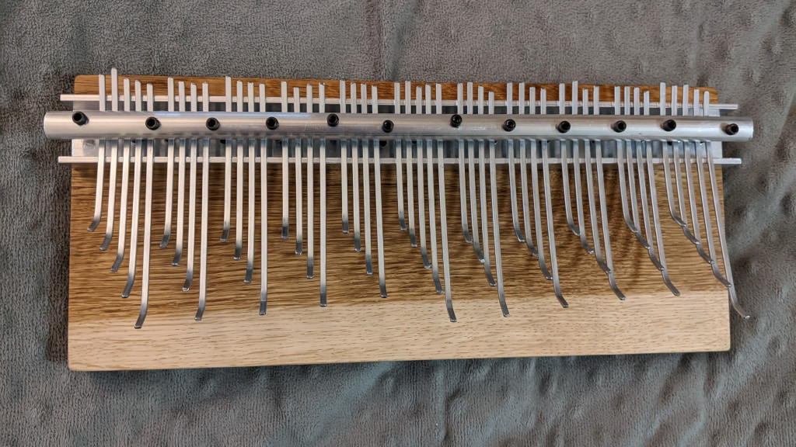

I have experience making and even selling my own kalimbas. I use key layouts inspired by Bill Wesley’s Array Mbiras, and the structural design I use was adapted from David Bellinger, who I got to meet in person, and ran the company ekalimbas, but I believe is now retired.

This is my 31-tone kalimba. I built it myself in 2023, and to my knowledge, it’s the only kalimba in existence designed to handle full 31-tone equal temperament. It has no sound hole or electronic amplification, so it’s pretty quiet, and it’s not the most ergonomic instrument to play either, but it works and it sounds rather nice. The 94 total keys span 3 octaves, and the instrument is 2 feet across. The base is finished eastern maple wood.

I made this smaller kalimba in August 2024 and I tuned it to a 7-note just intonation scale (specifically 18:20:22:24:27:30:33:36). I listed it on Reverb and my friend bought it from me. Like the other kalimbas I made, it was made with no electronic amplification or sound hole, but my friend found that placing it on top of certain hollow objects (such as a box) and playing it there substantially amplifies it. The base is made of wood from an oak tree that fell on a family member’s property.

This is another kalimba I sold. It’s in 19-tone equal temperament, so it has a flat, mellow major third and perfect fifth and has what are essentially perfect classic minor thirds (a frequency ratio of 6/5). The base is made of wood from the same tree as the just intonation kalimba.

This one is in 22-tone equal temperament and has also been sold. The layout is a bit different for this one since 22edo isn’t a meantone temperament. Keys in the same “cluster” are spaced apart by semioctaves (tritones) instead of octaves, and horizontally, the layout is in 2-step (11edo) semitones. Just like in 12edo, a semioctave and a semitone results in a perfect fifth, but importantly, (the approximate) 5/4 will be less of a distance on the kalimba than what it would be if the keys were arranged in just octaves and fourths or fifths like the other equal-tempered kalimbas I made. This is because in 22edo, harmonic 5 and a stack of 4 fifths aren’t tempered together like 12edo, 19edo, 31edo, and so on. Instead it’s a system where harmonic 40 and a stack of 9 fifths are tempered together. The base is also made from the same oak tree’s wood.Before finishing the 31-tone kalimba, I had built a 41edo kalimba with Kite Giedraitis that is 3 feet long and has 124 keys, but it didn’t turn out as well as the others since I didn’t have as much experience back then. We might come back to that project in the future, though.